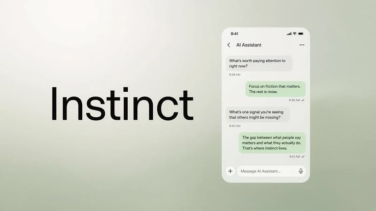

تخيل أنك تستطيع إرسال رسالة إلى مساعد ذكي تطلب منه البحث عن رحلة، أو ترتيب موعد، أو شراء بعض الاحتياجات، ثم يتولى تنفيذ الخطوات بدلًا من أن تفتح عدة تطبيقات وتتعامل معها بنفسك.
هذه هي الفكرة التي يحاول Instinct AI تقديمها: مساعد شخصي لا يكتفي بالإجابة عن الأسئلة، بل يحاول تنفيذ المهام اليومية باستخدام الهاتف والكمبيوتر والخدمات التي تسمح له بالوصول إليها.
في هذا الدليل من AI بالعربي سنتعرف على ماهية Instinct، وأهم استخداماته، وكيفية الوصول إليه، وطريقة إرسال أول طلب، وما الذي ينبغي الانتباه إليه قبل ربط حساباتك الشخصية.

ماذا سنتناول في هذا المقال؟
- ما هو Instinct AI؟
- لماذا يحظى Instinct AI بالاهتمام؟
- أهم مميزات Instinct AI
- كيف يعمل Instinct AI؟
- كيفية الوصول إلى Instinct
- طريقة إعداد Instinct لأول مرة
- كيف تستخدم Instinct لتنفيذ مهمة؟
- أمثلة عملية على الاستخدام
- ما الفرق بين AI Agent وChatbot؟
- مقارنة Instinct مع ChatGPT وClaude
- هل Instinct مجاني؟
- الخصوصية والأمان
- عيوب Instinct AI وحدوده
- مستقبل المساعدين الذكيين
- الأسئلة الشائعة
ما هو Instinct AI؟
Instinct AI هو مساعد شخصي يعتمد على الذكاء الاصطناعي، طورته شركة Spear Street Technology بقيادة المؤسس Noah Shinn.
يختلف Instinct عن روبوتات المحادثة التقليدية؛ فبدلًا من أن تسأله عن طريقة حجز تذكرة وتحصل على خطوات مكتوبة فقط، يمكنك إسناد المهمة إليه ليحاول البحث والتعامل مع المواقع والخدمات المطلوبة.
ويعتمد على مفهوم يسمى AI Agent أو وكيل الذكاء الاصطناعي. وهو نظام يستطيع فهم الهدف، وتحديد الخطوات المناسبة، واستخدام أدوات رقمية لتنفيذ المهمة، مع الحاجة إلى مراجعة المستخدم للعمليات المهمة.
لماذا يحظى Instinct AI بالاهتمام؟
السبب الأساسي هو اختلاف طريقة التفاعل معه. فالموقع الرسمي يوضح أن المستخدم يستطيع التواصل مع Instinct عبر الرسائل أو المكالمات، وأن المساعد مصمم لاستخدام الهاتف والكمبيوتر بطريقة تشبه استخدام الإنسان لهما.
وهذا يعني أن الفكرة ليست إضافة نافذة محادثة جديدة فقط، بل محاولة تحويل المساعد الذكي إلى شخص يساعدك في إنجاز الأعمال الرقمية المتكررة، مثل البحث والحجز والمتابعة والتواصل.
كما أثار المشروع اهتمامًا استثماريًا وإعلاميًا كبيرًا خلال عام 2026، خصوصًا مع انتشار أدوات AI Agents التي تحاول تنفيذ المهام بدلًا من الاكتفاء بتوليد النصوص.
لكن من المهم عدم الخلط بين الاهتمام بالشركة وبين إثبات أن كل إمكانيات المنتج تعمل بشكل مثالي؛ فما زال تقييم التجربة الفعلية مرتبطًا بدقة التنفيذ والإتاحة والصلاحيات.
أهم مميزات Instinct AI واستخداماته
يركز Instinct على المهام الشخصية التي تحتاج عادةً إلى التنقل بين أكثر من موقع أو تطبيق. ومن أبرز الاستخدامات التي تناولتها التقارير عن الخدمة:
1. تنظيم المواعيد والمهام
يمكنه المساعدة في ترتيب المواعيد والتعامل مع التقويم والمهام المرتبطة به، بدلًا من إدخال كل التفاصيل يدويًا في تطبيقات مختلفة.
2. التخطيط للرحلات والسفر
يستطيع المساعدة في البحث عن خيارات السفر، ومقارنة بعض الاختيارات، وترتيب خطوات الرحلة، وقد يساعد في إجراءات الحجز حسب الخدمات المتاحة والصلاحيات الممنوحة له.
3. التسوق وشراء الاحتياجات
من الاستخدامات التي ظهرت في تجارب المستخدمين البحث عن المنتجات وطلب الاحتياجات اليومية ومتابعة بعض تفاصيل الشراء والتوصيل. ومع ذلك، يجب مراجعة المنتج والسعر وعنوان التوصيل قبل إتمام أي طلب.
4. التعامل مع الاشتراكات والفواتير
يمكنه المساعدة في متابعة بعض الاشتراكات والتواصل مع الشركات بشأن الخدمات أو الفواتير، بما في ذلك محاولة إلغاء اشتراك لم تعد بحاجة إليه.
5. إجراء المكالمات والتواصل مع الجهات
من الأفكار اللافتة في الخدمة إمكانية التواصل مع المساعد صوتيًا، كما تحدثت الشركة عن خدمة Instinct Concierge التي تساعده على إجراء مكالمات هاتفية نيابة عن المستخدم في بعض المهام، مثل الاستفسار عن خدمة أو ترتيب حجز.
6. التعامل مع البريد والتطبيقات
يمكن أن يستفيد المساعد من التطبيقات والحسابات التي يربطها المستخدم بالخدمة، مثل البريد الإلكتروني والتقويم وبعض أدوات العمل، حتى يساعد في متابعة الرسائل وتنفيذ المهام المرتبطة بها.
كيف يعمل Instinct AI؟
يعتمد Instinct AI على فكرة الوكيل الذكي الذي يستقبل هدفك، ثم يحاول تقسيمه إلى خطوات واستخدام الأدوات والخدمات المتاحة لتنفيذه.
وبدلًا من الاعتماد على واجهة محادثة تقليدية فقط، يمكن للمستخدم التواصل معه بالرسائل أو المكالمات. ويتولى المساعد التعامل مع بعض المهام الرقمية من خلال بيئة عمل مخصصة له.
يمكن تبسيط طريقة العمل في أربع مراحل:
- فهم الطلب: يستقبل المساعد ما تريد إنجازه، مثل البحث عن رحلة أو تنظيم موعد.
- تحديد الخطوات: يحاول تقسيم الهدف إلى إجراءات أصغر يمكن تنفيذها.
- استخدام الأدوات: يتعامل مع الخدمات والتطبيقات المتاحة له وفق الصلاحيات الممنوحة.
- عرض النتيجة: يعرض ما توصل إليه، وقد يحتاج إلى توضيح أو موافقة منك قبل بعض الإجراءات.
كيفية الوصول إلى Instinct AI
بحسب التقارير المنشورة عن إطلاق الخدمة، بدأ Instinct بنسخة تجريبية محدودة، وكان الوصول إليها يعتمد على الدعوات بدلًا من التسجيل المفتوح لجميع المستخدمين.
لذلك قد لا تتمكن من استخدام الخدمة بمجرد زيارة الموقع، كما يمكن أن تتغير طريقة التسجيل والإتاحة مع تطور النسخة التجريبية.
لمعرفة حالة الخدمة الحالية، راجع الموقع الرسمي: Instinct. وتجنب المواقع التي تدعي بيع دعوات أو توفير أكواد تسجيل غير رسمية.
طريقة إعداد Instinct لأول مرة
بعد إتاحة الخدمة للمستخدم المؤهل وقبول حسابه وفق شروطها، تبدأ مرحلة إعداد المساعد وتحديد طريقة التواصل والصلاحيات التي يحتاج إليها.
لا توجد واجهة واحدة ثابتة يمكن ضمان ظهورها لجميع المستخدمين، لأن تفاصيل الإعداد قد تتغير خلال المرحلة التجريبية. لكن بصورة عامة، تتضمن تجربة إعداد المساعد هذه الجوانب:
- تحديد وسيلة التواصل: اختيار قناة التواصل التي تدعمها الخدمة للحساب.
- مراجعة الحساب: التأكد من بيانات الحساب وشروط الاستخدام وسياسة الخصوصية.
- ربط الخدمات عند الحاجة: اختيار التطبيقات التي يحتاج المساعد إلى استخدامها فقط.
- مراجعة الصلاحيات: فهم البيانات التي يستطيع المساعد الوصول إليها والإجراءات التي يمكنه تنفيذها.
لا يُنصح بربط جميع الحسابات مرة واحدة. الأفضل منح أقل قدر من الصلاحيات اللازمة للمهمة، ومراجعة إعدادات الخصوصية قبل مشاركة بيانات شخصية.
كيف تستخدم Instinct لتنفيذ مهمة؟
بعد إعداد الخدمة وتوفر قناة التواصل المناسبة، تعتمد طريقة استخدام Instinct على وصف المهمة بوضوح، بدلًا من كتابة طلب عام لا يحدد النتيجة المطلوبة.
إليك طريقة عامة تساعد على كتابة طلب جيد لأي وكيل ذكاء اصطناعي:
- ابدأ بهدف واضح: اشرح ما الذي تريد إنجازه.
- أضف التفاصيل: حدد الوقت أو المكان أو الميزانية أو الشروط المهمة.
- حدد حدود المهمة: وضح ما الذي يمكن للمساعد فعله وما الذي يحتاج إلى موافقتك.
- راجع النتيجة: افحص المعلومات قبل الموافقة على أي إجراء مهم.
مثال على طلب واضح
لاحظ أن الطلب حدد الهدف والتفاصيل المطلوبة، والأهم أنه أوضح أن تنفيذ الحجز يحتاج إلى موافقة المستخدم.
مثال آخر لتنظيم المواعيد
بهذه الطريقة يصبح الطلب أكثر تحديدًا، ويسهل على المساعد فهم النتيجة التي تتوقعها منه.
أمثلة عملية على استخدام Instinct AI
يمكن الاستفادة من فكرة المساعد الشخصي في أنواع مختلفة من المهام، ومن أبرز الأمثلة التي تناولتها التقارير عن Instinct:
- السفر: البحث عن خيارات الرحلات وترتيب تفاصيل السفر.
- التسوق: البحث عن المنتجات ومقارنة الخيارات والمساعدة في الطلب.
- المطاعم: البحث عن أماكن مناسبة والمساعدة في التواصل والحجز.
- المواعيد: تنظيم جدول المستخدم ومتابعة المواعيد.
- الاشتراكات: المساعدة في متابعة بعض الاشتراكات والتواصل مع مقدمي الخدمات.
- البريد الإلكتروني: المساعدة في التعامل مع الرسائل والمهام المرتبطة بها.
ما الفرق بين AI Agent وChatbot؟
رغم أن الاثنين يعتمدان على الذكاء الاصطناعي، فإن طريقة استخدامهما والهدف الأساسي منهما قد يختلفان.
Chatbot هو روبوت محادثة يركز على فهم الأسئلة وتقديم الإجابات والمعلومات. أما AI Agent فيحاول الانتقال من الإجابة إلى التخطيط واستخدام الأدوات وتنفيذ سلسلة من الإجراءات.
| وجه المقارنة | Chatbot | AI Agent |
|---|---|---|
| الهدف | الإجابة والمساعدة بالمعلومات | محاولة إنجاز المهام |
| طريقة العمل | محادثة وتوليد إجابات | تخطيط واستخدام أدوات |
| تنفيذ الإجراءات | قد يشرح لك كيفية تنفيذها | قد ينفذ بعضها عند توفر الصلاحيات |
| أمثلة | الإجابة عن الأسئلة والشرح | تنظيم المهام والحجوزات |
مقارنة Instinct مع ChatGPT وClaude
لا يمكن اعتبار الأدوات الثلاث بدائل متطابقة؛ فلكل واحدة طريقة مختلفة في تقديم المساعدة.
| وجه المقارنة | Instinct | ChatGPT | Claude |
|---|---|---|---|
| التركيز الأساسي | المهام الشخصية | مساعد متعدد الاستخدامات | الكتابة والتحليل والعمل |
| المحادثة | رسائل ومكالمات | محادثة نصية وصوتية | محادثة نصية وصوتية حسب الإتاحة |
| تنفيذ المهام | محور الفكرة الأساسية | عبر الأدوات والميزات المتاحة | عبر الأدوات والميزات المتاحة |
| الاستخدامات | المهام اليومية والخدمات | التعلم والبحث والكتابة وغيرها | الكتابة والبرمجة والتحليل وغيرها |
هذه مقارنة عامة وليست ترتيبًا للأفضل؛ لأن قدرات كل خدمة تتغير مع تحديثاتها، كما أن بعض المميزات قد تتطلب خططًا أو صلاحيات معينة.
هل Instinct AI مجاني؟
أشارت تقارير عن النسخة التجريبية إلى أن بعض المستخدمين الأوائل تمكنوا من استخدام الخدمة مجانًا. لكن هذا لا يثبت وجود خطة مجانية دائمة أو أن جميع المستخدمين سيحصلون على الشروط نفسها.
لذلك يجب مراجعة الموقع الرسمي وشروط الخدمة لمعرفة أي تغييرات في الأسعار أو المميزات المدفوعة قبل الاعتماد على الخدمة.
هل Instinct AI آمن؟ وماذا عن الخصوصية؟
الخصوصية من أهم النقاط التي يجب التفكير فيها عند استخدام مساعد يستطيع التعامل مع التطبيقات والحسابات الشخصية. فكلما زادت الصلاحيات الممنوحة له، زادت أهمية معرفة البيانات التي يمكنه الوصول إليها.
وقد تناولت تقارير تقنية مبكرة مخاوف تتعلق بنطاق الصلاحيات وشروط الاستخدام. وفي المقابل، تحدثت الشركة لاحقًا عن إجراءات حماية مثل بيئات التشغيل المعزولة وبيانات الاعتماد المؤقتة.
وجود إجراءات حماية معلنة لا يعني أن الخدمة خالية من المخاطر، ولذلك من الأفضل اتباع بعض الاحتياطات:
- لا تربط حسابات لا يحتاج المساعد إلى استخدامها.
- راجع الصلاحيات وسياسة الخصوصية قبل الموافقة.
- لا تشارك كلمات المرور أو المعلومات الحساسة في المحادثات.
- راجع تفاصيل أي عملية شراء أو حجز قبل إتمامها.
- افحص إعدادات استخدام بياناتك وخيارات الخصوصية المتاحة.
ما عيوب Instinct AI وحدوده؟
رغم الفكرة الواعدة، هناك مجموعة من التحديات التي ينبغي وضعها في الاعتبار قبل الاعتماد على أي وكيل ذكي:
- أخطاء التنفيذ: قد يفهم المساعد الطلب بطريقة غير دقيقة أو ينفذ خطوة غير مقصودة.
- الخصوصية: يحتاج التعامل مع الحسابات الشخصية إلى مراجعة دقيقة للصلاحيات.
- الإتاحة: قد تكون الخدمة أو بعض ميزاتها محدودة خلال المرحلة التجريبية.
- اختلاف الخدمات: ليست كل المواقع والتطبيقات متاحة بالضرورة للمساعد.
- التكلفة المستقبلية: قد تتغير شروط الاستخدام والأسعار مع تطور المنتج.
هل يمثل Instinct مستقبل المساعدين الذكيين؟
ظهور أدوات مثل Instinct AI يعكس اتجاهًا مهمًا في تطور الذكاء الاصطناعي، وهو الانتقال من الأنظمة التي تقدم المعلومات إلى أنظمة تحاول تنفيذ المهام.
وقد تصبح هذه الفكرة أكثر انتشارًا في المستقبل، خصوصًا إذا تحسنت دقة التنفيذ وأصبحت حماية البيانات أكثر وضوحًا، وأصبح المستخدم قادرًا على التحكم في كل إجراء بسهولة.
لكن نجاح هذا الاتجاه لن يعتمد على قدرات الذكاء الاصطناعي وحدها؛ بل سيعتمد أيضًا على ثقة المستخدمين، وسهولة الاستخدام، وتكلفة الخدمة، ومدى قدرتها على تنفيذ المهام دون أخطاء مؤثرة.
الأسئلة الشائعة عن Instinct AI
ما هو Instinct AI؟
هو مساعد شخصي يعتمد على الذكاء الاصطناعي، ويركز على محاولة تنفيذ المهام اليومية من خلال التواصل مع المستخدم واستخدام الخدمات والأدوات المتاحة له.
هل Instinct AI مجرد شات بوت؟
لا، ففكرته الأساسية هي العمل كوكيل ذكي يحاول التخطيط للمهام واستخدام الأدوات لتنفيذ بعض الإجراءات، وليس الاكتفاء بتقديم إجابات نصية.
كيف يمكن استخدام Instinct AI؟
تعتمد الخدمة على التواصل بالرسائل أو المكالمات، ثم وصف المهمة بوضوح ومراجعة النتائج والصلاحيات قبل الموافقة على الإجراءات المهمة.
هل يحتاج Instinct إلى تحميل تطبيق؟
تعتمد فكرته على التواصل عبر قنوات الرسائل والمكالمات، وليس على تجربة تطبيق محادثة تقليدي فقط. راجع الموقع الرسمي لمعرفة وسائل التواصل المدعومة حاليًا.
هل Instinct AI مجاني؟
أُشير إلى استخدام مجاني لبعض المستخدمين خلال المرحلة التجريبية، لكن لا يمكن اعتبار ذلك ضمانًا لخطة مجانية دائمة.
هل يحتاج Instinct AI إلى دعوة؟
بدأ Instinct AI بإتاحة محدودة تعتمد على الدعوات، وقد تختلف إمكانية الوصول إليه بمرور الوقت. وتنتشر روابط دعوة يشاركها المستخدمون على مواقع خارجية، لكن لا يمكن ضمان صلاحيتها أو اعتبارها روابط رسمية من الشركة. للتأكد من حالة الإتاحة الحالية، يُفضّل الرجوع إلى "الموقع الرسمي لـInstinct" (https://instinct.com/). ملاحظة: تشترط شروط خدمة Instinct أن يكون المستخدم بعمر 18 عامًا أو أكثر. كما يُنصح بالحذر قبل منح أي مساعد ذكي صلاحية الوصول إلى البريد الإلكتروني أو الحسابات الشخصية.
هل Instinct AI متاح في مصر؟
لا يمكن تأكيد الإتاحة الكاملة في مصر دون الرجوع إلى شروط التسجيل والدول المدعومة حاليًا، كما أن بعض المهام قد تعتمد على توفر الخدمات المحلية.
هل Instinct AI مناسب لكل المستخدمين؟
لا. يجب مراجعة شروط الأهلية والسن والخصوصية قبل استخدامه، كما أن شروط الخدمة المنشورة تشترط أن يكون المستخدم بعمر 18 سنة أو أكثر.
هل يمكن الاعتماد على Instinct في عمليات الشراء والحجز؟
يمكنه المساعدة في بعض هذه المهام وفقًا للميزات المتاحة، لكن يجب مراجعة التفاصيل والتأكد من تأكيد العملية بنفسك.
الخلاصة
يقدم Instinct AI تصورًا مختلفًا للمساعد الشخصي؛ فهو يحاول الانتقال من مجرد الإجابة عن الأسئلة إلى تنفيذ المهام اليومية باستخدام الأدوات والخدمات الرقمية.
ومع ذلك، ما زالت هناك نقاط مهمة تتعلق بدقة التنفيذ والخصوصية والإتاحة والتكلفة. لذلك من الأفضل التعامل معه باعتباره تقنية واعدة تحتاج إلى تقييم مستمر، وليس بديلًا مضمونًا عن مراجعة المستخدم لكل إجراء.
تابع AI بالعربي للتعرف على أحدث أدوات الذكاء الاصطناعي وشروحات استخدامها باللغة العربية.
موضوعات أخرى قد تهمك
- Claude vs ChatGPT: مقارنة شاملة
- دليل كتابة الأوامر الاحترافية للذكاء الاصطناعي
- أفضل أدوات الكتابة بالذكاء الاصطناعي
- مخاطر الذكاء الاصطناعي وكيفية استخدامه بأمان